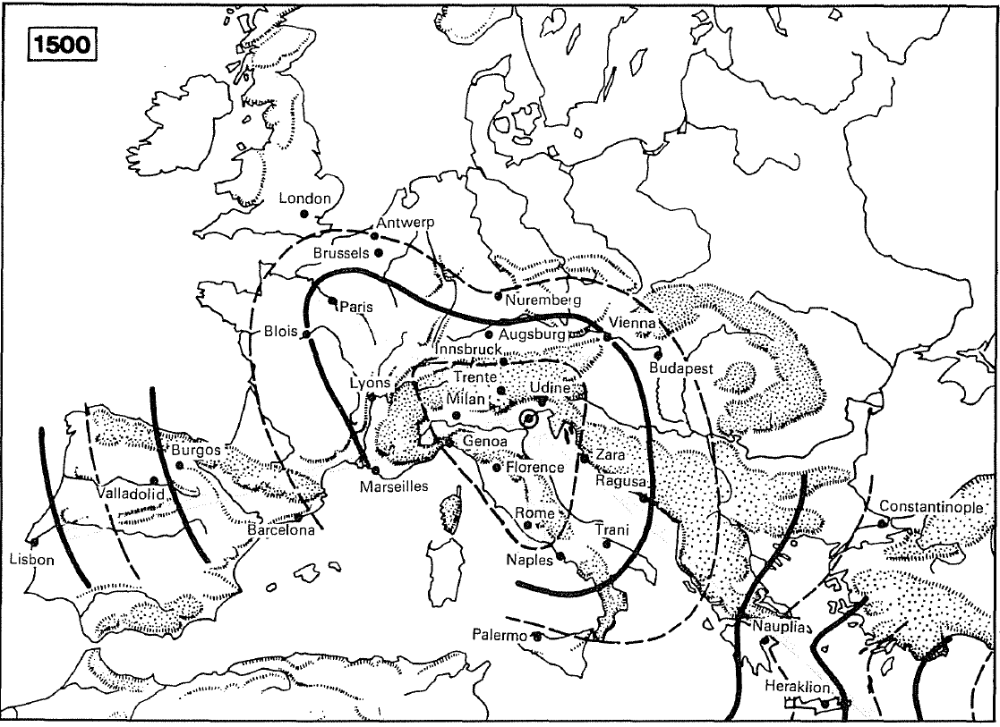
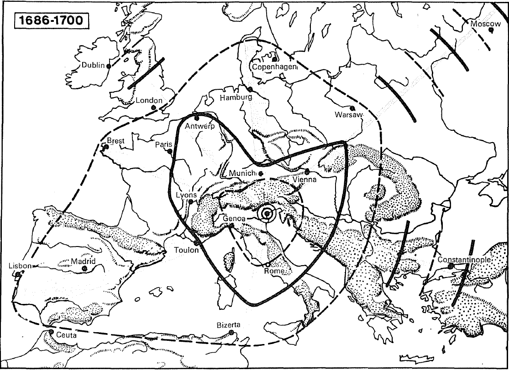
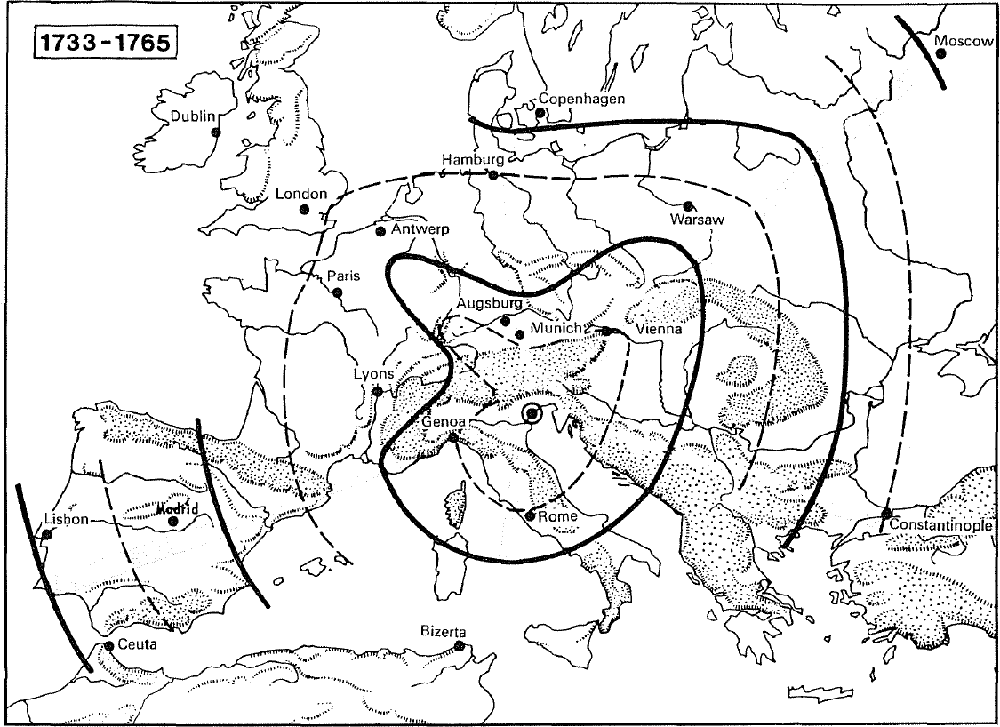

Muazzam başarı, muazzam yenilik: açık denizdeki başarı, evrensel bir bağlantılar sistemi kurmaktadır. Fakat bu işi yavaşlıklar, Eski Rejim ekonomisinin bizzat sürekli sınırlarından biri olarak kalan taşımacılığın yetersizlikleri konusunda hiçbir şey değiştirmeden yapmaktadır. XVIII. yüzyıla kadar, deniz yolculukları bitmez tükenmez uzunlukta, kara taşımaları felçli gibidir. İstendiği kadar, Avrupa'nın XIII. yüzyıldan itibaren, muazzam bir faal yollar ağını devreye soktuğu söylensin; ama bir XVII. yüzyıl yolunun hâlâ, düzlük alanda bile, trafiğin kendiliğinden aktığı bir “şerit” olmadığını anlamak için, Jean Breughel'in Münih pinakoteğinde bulunan bir dizi küçük tablosuna bakmak yeterlidir. Genel olarak, yolun izi ancak şöylesine bir görülebilmektedir. Eğer kullananların hareketi olmazsa, bu yolu bir bakışta bulmak, kuşkusuz kolay değildir. Ve bu yolu kullananlar, çoğu zaman yayan köylüler, bir köylü kadınını ve sepetlerini pazara götüren bir arabadır; yaya bir kişi bu arabayı çeken hayvanın yularını tutmaktadır... Tabii ki bazen çevik süvariler, koskoca bir burjuva ailesini neşeyle çekiyormuş gibi bir havada olan üç atlı bir araba da söz konusu olmaktadır. Fakat izleyen tabloda, yarıklar suyla dolmuştur, süvariler çamura batmaktadır, hayvanlar ise baldırlarına kadar balçıkla kaplanmaktadırlar; arabalar tekerlekleri çamura battığı için, zorlukla ilerleyebilmektedirler. Yayalar, çobanlar, domuzlar, bilgelikle yolun kenarındaki daha emin yer olan şevin üstüne çıkmışlardır. Aynı manzaralar, belki de daha beter olarak, Kuzey Çin'de de vardır. Eğer yol “bozulduysa” veya “büyük bir dirsek yapıyorsa”, arabalar, atlar ve yayalar “yolu kısaltmak ve kendilerine daha iyi bir yol bulmak için, ekilmiş tarlaların arasından geçmekte ve ekinlerin toplanmış olup olmadığı veya yeni ürünlerin büyüyüp büyümediğiyle ilgilenmemektedirler”. Bunu anlatmamızın nedeni, hayranlık verici bir şekilde bakımlı tutulan, kum döşeli bazen de taş kaplı ve Avrupalı seyyahların hayranlıkla sözünü ettikleri büyük Çin yollarının imgelerini düzeltmektir.
Bu konularda, Richelieu veya V. Carlos Avrupa'sından, Songlann Çin'ine veya Roma imparatorluğuna değişen bir şey yoktur veya çok az şey değişmiştir! Ve bütün bunların ticari mübadeleleri ve hatta sıradan insan ilişkilerini yönetmekte ve ağırlaştırmaktadır. O dönem postacıları, hedeflerine varmak için haftalar, aylar harcamaktadırlar. Ernst Wagemann'in dediği gibi “mekânın bozguna uğratılması”, ancak 1857'de, ilk kıtalararası denizaltı kablosunun yerleştirilmesiyle ortaya çıkacaktır. Demiryolu, buharlı gemi, telgraf, telefon dünya ölçeğindeki kitle iletişimlerini çok geç başlatacaklardır.
Herhangi bir dönemde, herhangi bir yol. Bu yolun üzerinde araçlar, yük hayvanları, birkaç süvari, hanlar, bir demirhane, bir köy, bir kent. Bunun gözüktüğü kadar az vurgulu, narin bir hat olduğunu düşünmeyin; hatta Arjantin pampası veya XVIII. yüzyıl Sibirya'sında bile. Taşıyıcı ve yolcular sınırlı bir yelpaze içinde seçim yapmaya mahkûmdurlar; bir geçiş vergisi veya bir gümrük karakolundan kurtulmak için, şu güzergâhı belki bir başkasına tercih edecekler, ama güçlük çıktığında ötekine dönebileceklerdir; şu yolu kışın, bir başkasını, buzlanma durumuna göre, ilkbaharda izleyeceklerdir. Fakat önceden öğütlenmiş yollardan asla vazgeçemezler. Yolculuk yapmak, başkalarının hizmetlerine başvurmaktır.
Rus ordusunda binbaşı olan şu İsviçreli hekim Jacob Fries, 1776'da, Omsk ile Tomsk arasındaki uzun yolu (890 km.) 178 saatte kat'etmiştir; yani saatte ortalama 5 km. hızla. Bu yolculuk esnasında, diğerine başı belâya girmeden ulaşacağına emin olmak üzere, her menzilde düzenli olarak at değiştirmiştir. Kışın bu menzillerden birini kaçırmak, karın içine gömülmek demektir. Arjantin içlerinde XVIII. yüzyılda bile, ağır öküz arabalarının içinde yolculuk yapılmaktadır; bunlar Buenos Aires'e buğday veya deri yüklü olarak gitmekte ve Mendoza, Santiago de Chili veya Jujuy'a doğru ve Peru yönüne boş olarak yeniden yola çıkmaktadırlar. Veya katır veyahut at sırtında yolculuk yapmak tercih edilmektedir: despoblados'u, çölleri gereken zamanda geçebilmek ve evleri, köyleri, su kaynaklarını, yumurta ve taze et satıcılarını yerlerinde bulabilmek için, yürüyüşü ayarlamak söz konusudur. Eğer yolcu arabanın darlığından bıkarsa, biri kendi, diğeri de “yeterli bir yatak takımı” için iki binek hayvanı alır ve konvoyun önüne geçerek, ve sıcaktan kurtulmak için, tercihan sabahın ikisiyle onu arasında dört nala ilerler. “Atlar bu geçişleri kısa zamanda yapmaya alışmışlardır ki, onları harekete geçirmek için uğraşmadan, kendiliklerinden dört nala gitmektedirler”. Ödül? “Yolcuların keyiflerince dinlenebilecekleri en iyi barınaklar olan posta evlerine” çabucak varmak. Buralarda yemek yenilmekte, yatılmaktadır. Bu ayrıntılar, Buenos Aires'ten Carcaranal'e olan yolun ilk kesimi için, bir XVIII. yüzyıl yazarının şu sözlerini anlamamıza yardım etmektedirler: “Bu üç buçuk günlük yol esnasında, iki geçiş hariç, bol ve ucuz inek, koyun veya tavuk bulunmaktadır”.
“Yeni” ülkelerin (Sibirya, Yeni Dünya) bu gecikmeli imgeleri, “eski” uygar ülkelerde, geçmiş yüzyıllardaki yolculukları tam olarak tasvir etmektedirler.
Pierre Lescalopier (1574) Balkanlardan geçerek İstanbul'a ulaşmak için “eğer herhangi bir çay veya çayır size yere basmanız için ve yolculuk çantanızdan bir miktar soğuk et ve birkaç şişe şarap çıkartarak, öğlen civarında rahatlamanıza ve atlarınızın koşumlarının çözülerek verdiklerinizi yemelerine olanak sağlamıyorsa, sabahtan akşama kadar yol almak gerekecektir” diye tavsiyede bulunmaktadır. Akşam, yiyecek ve içecek bulunan ilk kervansaraya ulaşmak gerekmektedir. Buraları “her günün sonunda ulaşılmak üzere yapılmış konuk evleridir. Zenginler ve yoksullar, daha iyisi olmadığından, (burada) konaklamaktadırlar, buraları büyük samanlıklar gibidir; günışığı pencerelerden değil de, duvar deliklerinden girmektedir”, insanlar bu salonun etrafında yer alan ve hayvanların bağlandığı “kerevetlerin” üzerine yerleştirilmektedirler. “Böylece herkes atını görmekte ve ona yemini kerevetin üzerinde vermektedir ve Türkler arpa ve yulaf yedirtmek için deri çantalar kullanmaktadırlar, at kulaklarının etrafından aşağı sallandırılan bu çantanın içinden yemektedir”. Bir Napolili seyyah 1693'te bu hanları daha basit bir şekilde tasvir etmektedir: “Bunlar atların ortayı işgâl ettikleri uzun ahırlardır... başka şeyler değillerdir; kenarlar hayvanların sahiplerine kalmaktadır”.
Çin'de XVII. yüzyılda basılmış olan bir halk güzergâhı, Pekin'den itibaren yolları, bunların güzergâhlarını, görevli mandarinlerin imparatorun hesabına ağırlandıkları, barındırıldıkları, beslendikleri, bineklerinin, kayıklarının, hamallarının değiştirildiği menzilleri işaret etmektedir. Birbirlerine birer günlük uzaklıktaki bu menziller, büyük kentler veya ikinci dereceden kentler, veya kaleler, veya şu “barınma ve devriye” yerleri olup, eskiden hiçbir kentin olmadığı yerlerde inşa edilmiş olan şu Ye ve Çin'lerdir...”. Sonradan buralarda çoğunlukla kentler oluşmuştur.
Yolculuk yapmak, sonuçta ancak kent ve köylerin birbirlerine yakın oldukları ülkelerde zevklidir. L’Ulysse François'nın (1643) meydana getirdiği şu “Mavi rehber” iyi hanları işaret etmektedir; Marsilya'da Faucon Royal, Amiens'de Cardinal hanı ve size Peronne'da Cerf hanına inmemeniz önerilmektedir (intikam mı, bilgelik mi?). Zevk ve hızlılık; kalabalık ve sıkı bir şekilde tutulan, “asayişi sağlanmış” ülkelerin.
Çin, Japonya, Avrupa, İslam aleminin ayrıcalığıdır. İran'da “her dört fersahta bir iyi kervansaraylar bulunmaktadır” ve bu ülkede ucuza yolculuk yapılmaktadır. Fakat ertesi yıl (1695), aynı seyyah İran'dan ayrıldıktan sonra Hindistan'da yakınmaktadır: han, kervansaray, araba için kiralık at, “Moğolların topraklarındaki büyük kasabaları”n dışında yoktur, “ya açıkta, ya da bazı ağaçların altında yatılmaktadır”.
Deniz güzergâhlarının önceden saptanmış olması daha da şaşırtıcı olacaktır. Ama gemi rüzgârlara, akıntılara, iskelelere bağımlıdır. Kıyı yönlendirmekte, kıyı denizcilerini kendine çekmektedir. Açık deniz yolculuklarına gelince, bunların deney tarafından dikte edilen kuralları vardır. İspanya ile “Kastilya Hindleri” arasındaki gidiş-dönüş yolu, daha işin başında Cristobal Colombus tarafından saptanmıştır ve 1519'da Alaminos tarafından ancak şöylesine bir değiştirilecek, sonra XIX. yüzyıla kadar yerinden kıpırdanamayacaktır. Dönüşte bu güzergâh çok kuzeye, 33. paralele kadar çıkmaktadır, bu yolcular için kuzeyin sertlikleriyle aniden karşılaşma fırsatı olmaktadır. Bunlardan biri “soğuk kendini sert bir şekilde hissettirmeye başlamaktaydı ve ipekliler giymiş ve paltoları olmayan bazı baylar, ona daha zor dayanıyorlardı” diye kaydetmektedir. Aynı şekilde, Urdaneta 1565'te Acapulco-Manila arasındaki, yani Yeni İspanya-Filipinler dönüş yolunu, bir kerede ebediyen geçerli olmak üzere keşfetmiş ve saptamıştır; bu yolun gidişi kolay (3 ay), dönüşü zor ve bitmez tükenmezdir (6-8 ay) ve yolcu bu dönüş için (1696) sekizlik sikkelerden 500 tanesine kadar varan miktarlar ödemektedir.
Eğer her şey yolunda giderse; nereden geçmek, nerede durmak kuralsa, oradan geçilmekte, orada durulmaktadır. Belirlenmiş iskelelerde yiyecek ve su yemlenmekte; eğer gerekirse karina temizlenmekte, onarım yapılmakta, bir direk değiştirilmekte veya limanların sakin sularında uzun süre kalınabilmektedir. Her şey öngörülmüştür. Yalnızca küçük tonajlı teknelerin sığ kıyıya ulaşabildikleri Gine açıklarında, eğer bir rüzgâr sizi yelkeni bağlamadan gafil avlarsa, direğin kırılma tehlikesi vardır; bu durumda, eğer mümkünse Portekiz adası ilha do Principe'ye gidip, yeni direk, şeker, köle aranacaktır. Sonda boğazının yakınında, bilgelik Sumatra kıyılarının mümkün olduğunca yakından izlenmesini, sonra Malaka yarımadasına varılmasını emretmektedir; büyük adanın tepelik kıyısı fırtınaya karşı koruma sağlamaktadır. Kasırga patladığında, örneğin Kâmpfer'i 1690'da Siyam'a götüren geminin başına geldiği gibi, demir atmak ve fırtınanın uzaklaşmasını beklerken, yakınlarda görülen gemiler gibi, denizin yakın dibine tırnaklarını geçirmek gerekmektedir.
Yol tarihinin olaylarını özellikle büyütmeyelim. Bunlar belirmekte, birbirleriyle çelişmekte, çoğu zaman yok olmaktadırlar. Eğer onları dinlersek, her şeyi açıklarlar. Bu arada, fuarların çöküntü sürecine girmesini, Champagne fuarlarına götüren yollar üzerinde Fransız yetkililer ve özellikle de X. Louis'nin adamlarının (1314-1316) yol açtıkları sıkıntıların açıklamadığı konusunda hiçbir kuşku yoktur. Hatta ne de, 1297'den itibaren Akdeniz ile Bruges arasında, büyük Ceneviz tekneleri tarafından başlatılan doğrudan ve düzenli deniz bağlantılarının yerlerine yerleşmelerinin de bunu açıklamadığında kuşku yoktur. XIV. yüzyılın bu başlarında, büyük ticaretin yapısı dönüşüme uğramakta, gezginci tüccar nadirleşmekte, mallar tek başlarına yolculuk yapmakta, yazılı mektuplar onların İtalya ile Alçak Ülkeler arasındaki, Avrupa ekonomisinin iki kutbu arasındaki hareketlerini uzaktan düzenlemekte, artık yolun ortasında görüşmeye ve tartışmaya gerek kalmamaktadır. Champagne menzili daha az yararlı hale gelmiştir. Hesap denkleştirmek için bir başka buluşma yeri olan Cenevre fuarlarının başarısı, ancak XVI. yüzyılda ortaya çıkabilecektir.
Aynı şekilde, 1350'lere doğru Moğol yolunun kapanmasına küçük açıklamalar aramayalım. XIII. yüzyılla birlikte Moğol fethi, Çin, Hind ve Batı ile karadan doğrudan bir temas kurmuştu. İslamiyet dönmüştü. Ve Marco'nun babası ve amcası Pololar, artı Marco'nun kendisi Uzak Çin'e veya Hind'e bitmez tükenmez, ama şaşırtıcı bir şekilde güvenlikli kara yollarından ulaşan tek kişiler değillerdi. Kopuş XIV. yüzyılın muazzam gerilemesinin hesabına yazılmalıdır. Çünkü her şey tek bir seferinde, Moğolların Çin'i gibi, Batı'da da gerilemiştir. Yeni Dünya'nın keşfinin, yeryüzünün öncelikli dolaşımlarını hemen değiştirdiğine inanmayalım. Akdeniz Colombus ve Vasco de Gama'dan bir yüzyıl sonra, hâlâ uluslararası hayatın nabzının kendinde attığını görmektedir; gerileme daha sonra ortaya çıkacaktır.
Kısa mesafeli karayolunun kroniğine gelince, olağan olarak konjonktür başarı veya başarısızlığı, kendi med ve cezirlerine göre önceden paylaştırmıştır. Brabant kontlarının “serbest mübadele siyasetleri”nin, söylendiği kadar belirleyici olduğundan kuşku duyalım: bu siyaset XIII. yüzyılda Champagne fuarları başarılarının zirve- sindeyken, görünüşte etkin olmuştur. Aynı şekilde, Milano'nun Rudolf von Habsburg'la (1273-1291), Bâle ile Brabant arasında, geçiş resminden bağışık bir yolun kendisine tahsisi konusunda yaptığı antlaşmalar, tam bir başarı sağlamışlardır. O sıralar kim başarı sağlamazdı ki? Fakat daha sonra, 1350-1460 arasındaki bir dizi antlaşma, bu aynı yola gümrük ayrıcalıkları tahsis ettiğinde, Gand kenti 1332'de kentten Champagne fuarlarına giden yolu, masrafları kendine ait olmak üzere onarttığında, bu durumlarda daha çok, vasat hale gelmiş olan bir konjonktürden sıyrılma çabalarını görelim. Buna karşılık, 1530'lara doğru hava yeniden açtığında, Salzburg piskoposu, arkalarında Milano ve Venedik olan Saint-Gothard veya Brenner geçitlerini ikâme etmeksizin, Tauern katır yolunu araba geçecek hale getirmeyi başarmıştır. Bunun nedeni, o sıralar büyük yollar için iş olmasıdır.
Biraz su olunca, karanın ortasında her şey canlanmaktadır. Ancak, bu eski hayatı hayal etmek kolaydır. Kim geniş ve boş Saöne üzerindeki Gray'de, dünün faal nehir tekneciliğini, çıkışta “Lyon malı” ve şarap, inişte buğday, yulaf, saman taşırken hayal edemez ki? Seine, Oise, Marne, Yonne olmaksızın Paris yiyemez, içemez ve hatta gönlünce ısınamazdı. Ren olmasaydı, Kolonya XV. yüzyıldan önce Almanya'nın en büyük kenti olamazdı.
XVI. yüzyılda bir coğrafyacı Venediği açıklamaya kalkışırsa, hemen denizden ve kentin lagünalarında birleşen büyük suyollarından -Brenta, Po, Adige- söz edecektir. Kayıklar, sopayla itilerek ilerletilen tekneler bu yollar ve hamallar aracılığıyla, sürekli olarak büyük kente ulaşmaktadırlar. Fakat heryerde en zayıf su kanalları bile kullanılmaktadır. “Tudela'dan Tortosa'ya ve denize kadar” Ebro'dan aşağı inen yassı teknelerde, XVIII. yüzyılın başında bile, Navarra'da imal edilen gülle, el bombası ve diğer mühimmat, binlerce güçlüğe ve özellikle de “malların boşaltılıp, daha sonra tekrar yüklendiği Flix çağlayanına” rağmen, taşınmaktadırlar.
Avrupa'da nehir taşımacılığının klasik bölgesi, Almanya'dan da fazla olmak üzere, Oder'in ötesinde Polonya ve Litvanya'dır; bu bölgede daha Orta Çağdan itibaren büyük ağaç kütüklerinin muazzam sallarla yapılan faal bir nehir taşımacılığı gelişmiştir; bu salların herbirinin üzerinde, gemiciler için bir kulübe yapılmıştır. Bu çok geniş trafik su istasyonları yaratmıştır -Torun (Thorn), Brest-Litovsk, Kovno- ve bitmez tükenmez tartışmaların çıkmasına neden olmaktadır.
Fakat dünya ölçeğinde, hiçbir şey, Mavi nehirden Yunnan sınırlarına kadar olan Güney Çin kesimine yetişememektedir. Bir tanık 1733'te şunu kaydetmektedir: “Çin'in (iç) ticareti, dünyada eşi olmayan bu dolaşıma bağlıdır... Bu kesimde heryerde teknelerin, kayıkların, salların (nehir kıvrımları yüzünden, dahiyane bir şekilde kendi üstünde toparlanan yarım fersah uzunluğundaki bu sallardan görülmektedir) sürekli bir hareketi görülmekte ve bunlar her köşede, tıpkı hareketli kentler gibi birikimler meydana getirmektedirler. Bu kayıkları yönetenlerin sürekli barınakları bu teknelerin içindedir, bu evde onlarla birlikte karıları ve çocukları da yaşamaktadır, böylece bu ülkenin sularında, hemen hemen kentlerde ve kırlarda olduğu kadar insan bulunduğuna dair bir çok seyyahın aktardıkları konusunda ikna olunabilir”. Bundan daha önce peder de Magaillans “dünyada hiçbir ülke yoktur ki, Çin seyrüseferine (bundan nehir seyrüseferini anlayınız) yetişebilsin” demekteydi. Çin'de “biri su üzerinde, diğeri karada iki imparatorluk ve ne kadar kent varsa, o kadar Venedik vardır”. Bir tanığın yargısı: 1656'da dört ay boyunca, Se Çuan'a kadar “denizin oğlu adı verilen” Yang-çe-Kiang'tan yukarı çıkmıştır, “Kiang'ın tıpkı deniz gibi, ne sonu, ne de dibi vardır”. Birkaç yıl sonra (1695) bir seyyah, “Çinlilerin" ilke olarak “ördekler gibi suda yaşamayı sevdiklerini” ileri sürmüştür. Açıkladığına göre, saatler, günler boyu “odun kafilelerinin ortasında” yolculuk yapılmaktadır, bir kentin kanal ve nehirlerini “bu kadar çok kayığın arasında” umut kırıcı bir yavaşlıkla aşmak gerekmektedir.
Eğer XV. ile XVIII. yüzyıllar arasında, tüm dünyadaki ulaşıma ilişkin imgeleri birara- ya getirebildikse ve bu imgeler okuyucuya özenle karıştırılmış alt yazılar olmaksızın sunulduysa, okuyucu da onları mekân içinde hatasız bir şekilde sınıflandırmayı başaracaktır: kim Çinli hamalın sırtlığını veya tek bir yelkeni olan Çin teknesini, Hindistan'ın taşıyıcı öküzünü veya savaş filini, veya Balkanlardaki Türk araba'sını (hatta Tunus'ta bile) veyahut da İslam aleminin deve kervanlarını, Afrika'nın birerli kol hamal sıralarını, Avrupa'nın öküz veya atlarla çekilen iki veya dört tekerlekli arabalarını tanımaz ki? Fakat eğer bu imgeleri tarihlendirmek gerekseydi, içinden çıkılmaz bir belâ olurdu: ulaşım araçları hiç evrilmemektedir.
Peder de Las Cortes 1626'da Kanton bölgesinde, koşan Çinli hamallar görmüştür; bunlar “yolcunun koltuğunu uzun bambu (sopalarla) kaldırmaktadırlar”. George Staunton bu aynı sıska kulileri 1793'te “paçavraları, saman şapkaları ve sandallarıyla” tasvir etmektedir. Pekin yolu üzerinde kayığı kanal değiştirmek zorunda kalınca, kol gücü ve bucurgatlarla kaldırılmış “ve bu yolla... kanal havuzları kadar kısa zamanda yukarı çekilmiştir; aslında daha fazla adam kullanmak gerekmiştir, ama bu Çin'de her zaman hazır, aza malolan ve her zaman diğerlerine tercih edilen bir güçtür”. Aynı şekilde, bir Afrika veya Asya kervanını tasvir etmek üzere, lbni Batuta'nın (1326), XVI. yüzyılın adı bilinmeyen bir İngiliz seyyahının, Rene Caille’nin (1799- 1838), Alman kâşif Georg Schweinfurth'un (1836-1925) betimlemelerinin yerleri değiştirilebilir. Manzara, zaman dışı olarak aynı kalmaktadır. 1957 Kasımında Polonya'da Krakow yollarında, hâlâ kente giden insan ve iğneli yaprakları arkada, yolun tozu içinde saç gibi sürünen çam dalları dolu, dört tekerlekli köylü arabalarının dar filolarını gördük. Bugün herhalde son günlerini yaşayan bu manzara, aynı zamanda XV. yüzyılın da bir gerçeğidir.
Denizde de aynı durum: Çin veya Japon jomjue'ları, Malezyalı veya Polinezyalıların terazili pirogları, Kızıldeniz veya Hind Okyanusundaki Arap tekneleri, işte hiç değişmeyen birçok kişilik. Babil uzmanı Ernst Sachau (1897-1898), tek bir demir çivi olmaksızın, palmiye lifleriyle birbirlerine bağlanan levhalardan meydana gelen bu Arap teknelerini, Belon du Mans (1550) veya Gemelli Careri (1695) kadar iyi bir şekilde tasvir etmektedir. Gemelli Daman'da (Hindlerde) yapımını gördüğü tekne hakkında şunları kaydetmektedir: “çiviler tahtadan, kalafat pamuktandı”. Bu yelkenliler İngiliz buharlı teknelerinin gelişine kadar, çok sayıda olmak üzere varlıklarını sürdüreceklerdir ve bugün bile, şurada veya burada, aynı denizci Sindbad çağındaki hizmetlerini yerine getirmeye devam etmektedirler.
Avrupa'da tabii ki kronolojik ayırımlar yapmak mümkündür. Top arabalarından kaynaklanan, ön tekerlek dingilleri hareket edebilen arabaların, gerçekten ancak 1470'lere doğru kullanılabildiklerini; büyük arabaların önce ilkel bir şekilde olmak üzere, ancak XVI. yüzyılın ilk yarısında veya sonunda ortaya çıkabildiklerini (aynaya ancak XVII. yüzyılda sahip olacaklardır); yolcu arabalarının XVII. yüzyıla ait olduklarını; İtalya'daki yolcular için posta arabaları ve vetturini'nin (arabacık) ancak Romantik çağda çoğalabildiklerini; ilk kanal havuzlarının XIV. yüzyılda ortaya çıktıklarını biliyoruz. Fakat bu yenilikler, gündelik hayatın temelinde yer alan, sayılamayacak kadar çok sürekliliği gizleyemez. Aynı şekilde, teknelerin değişken aleminde, örneğin tonajlar, hızlar gibi aşılamayacak üst sınırlar bulunmaktadır; bunlar “tavan”da bir süreklilik meydana getirmektedirler.
Ceneviz karakaları, XV. yüzyıldan itibaren 1.500 tonluk su çekimine sahip olmuşlardır; 1.000 tonluk Venedik gemileri hacimli Suriye pamuk balyalarını yüklemektedirler; 900 ve 1.000 tonluk XVI. yüzyıl Raguza yük yelkenlileri tuz, yün, buğday, şeker, başa belâ deri trafiğinde uzmanlaşmışlardır. Denizin devleri oİan Portekiz karakaları XVI. yüzyılda 2.000 tona kadar su kaldırmakta, yolcu ve mürettebat olarak 800'den fazla insan taşımaktadırlar. Yapımlarında kullanılan kereste yeteri kadar kuru olmadığında, gövdelerinde bir delik açılınca, bir fırtına onları Mozambik kıyılarının dibine gönderdiğinde, daha hafif korsan tekneleri etraflarında dönüp durup, koca heyulayı ele geçirip, ateşe verdiklerinde, işte muazzam maddi kayıplar meydana gelmektedir. 1592'de İngilizler tarafından ele geçirilen Madre de Deus, su çekiminin fazlalığı yüzünden Thames'tan yukarı çıkamamıştır. Bu gemi 1.800 tonilatodan fazlaydı ve onu ele geçiren Raleigh'nin muavini olan Sir John Burrough bu tekneyi bir canavar olarak betimliyordu.
Kabaca, 1588'in Yenilmez Armada'sından bir yüzyıl önce, tersaneler rekorlarına ulaşmışlardır. Yalnızca, fiili veya hukuki tekeller tarafından garanti edilen dengeleyici veya uzun mesafeli trafikler, bu büyük tonajlı tekne lüksüne olanak vermekteydi. Muhteşem Indiamen (adlarına rağmen Çin ticaretinde uzmanlaşmışlardır) XVIII. yüzyılda 1.900 tonluk su çekimini aşamamaktadırlar. İnşaat malzemelerinden, yelkenlerden, toplardan kaynaklanan bir sınır bu esaretleri dayatmaktadır.
Fakat yukarı bir sınır, bir ortalamanın tersidir. Yelkenli seyrüseferin son günlerine kadar, 30,40, 50 tonluk çok küçük tekneler denizlerde fink atmışlardır. Ancak 1840'lara doğru, demir kullanımı daha büyük teknelerin yapımına olanak verecektir. O tarihe kadar 200 tonluk tekne kural, 500 tonluk olanı istisna, 1.000-2.000 ton olanı da bir merak unsuru olmuştur.
Kötü yollardan çok düşük hızlar çıkmaktadır. 1979'un insanı böyle akıl yürütmektedir ve bakış açısının değeri vardır. Bu kişi dünün her türlü faal hayatını muazzam handikapını hergünün gerçekliği olarak gören, o çağa mensup insanlardan daha iyi görmektedir. Paul Valery önceden şunu söylemişti: “Napoleon, Jules Cesar'la aynı yavaşlıkta ilerliyor”. Bu izleyen üç krokinin gösterdiği durumdur; bu krokiler haberlerin Venediğe ulaşma hızlarını ölçmeye olanak vermektedirler: 1497-1537 arasına ilişkin olan ilk çizim, Venedik yurttaşı olan Marino Sanudo'nun Diarit'sinden yararlanılarak yapılmıştır; Sanudo Signoria'ya gelen mektupların geliş tarihlerini, yolladıklarının da çıkış tarihini günü gününe kaydetmiştir; 1686-1701 ve 1733-1735 arasına ilişkin çizimler ise, Venedik'te yayınlanan elyazması gazetelere dayanılarak hazırlanmıştır; bunlar Paris'te denildiği gibi, gerçek “elle yazılmış haberler”dir. Başka hesaplamalar aynı sonucu tekrarlayacaklardır; bu sonuç ise, atlar, arabalar, tekneler, posta katarları ile 24 saatte en fazla 100 km. yol almanın kural olduğudur. Ve bunlar rekorlar olup, çok nadir başarıların dışında, bir lüks olarak kalmaktadırlar. XVI. yüzyılın başında Nuremberg'te, fiyatı ödendiği takdirde bir talimatı Venediğe dört günde göndermek mümkündür. Eğer büyük kentler hızlı haberleri kendilerine doğru çekiyorlarsa, bunun nedeni acelenin bedelini ödüyor olmaları ve mekânı zorlamanın yollarının her zaman bulunmasıdır. Bu yollardan biri, tabii ki taş veya kaldırım taşı döşenmiş yolların yapımı olacaktır, ama bunlar uzun süre istisna olarak kalacaklardır.
Tamamen kaldırımtaşı kaplanmış olan Paris-Orleans yolu, XVII. yüzyılda bile Torfou korusu civarında korku salan haydutlara rağmen, Fransa'nın esas nehir limanı olan ve Paris'in eşiti (veya hemen hemen) olan Orleans ile hızlı bir bağlantı kurmaktadır. Zaten Loire, krallığın en uygun su yollarından biridir. “Yatağı en geniş, uzunluğu en fazla olan (bu nehrin) ... üzerinde krallık içinde, yelken ile 160 fersahtan fazla yol alınabilir ki, bu durum Fransa'nın hiçbir nehri üzerinde söz konusu değildir”. Paris-Orleans arasındaki bu yol, “kralın kaldırımlı yolu”dur; araba trafiğine uygun olan bu büyük yola, bir İtalyan daha 1581'de “strada di carri" demiştir. Aynı şekilde, İstanbul'dan Sofya üzerinden Belgrad'a ulaşan İstanbul yolu, XVI. yüzyıldan itibaren arabalara, XVIII. yüzyıldan itibaren de lüks arabalara sahiptir.


VENEDİĞE GİDEN HABERLER
Aralarında birer hafta olan eşzaman eğrileri, üç kroki üzerinde, mektupların Venediğe varmak için sarfettikleri zamanı kabaca işaret etmektedirler. Birinci harita P. Sardella’nın çalışmalarına (1500, daha kesin olarak 1496-1534) dayanılarak hazırlanmıştır, ikinci ve üçüncüsü, Londra Record Office'de muhafaza edilen el yazması Venedik gazetelerine göre yapılmıştır. Bunların ayıklanması benim ve F. C. Spooner'ın tarafından yapılmıştır. Gri huzmeler, ortalama hız arttıkça kalınlaşmaktadır. Bir haritadan diğerine farklar, şu veya bu eksene göre çok önemli olarak gözükebilirler. Bunlar güncelin acilliğine göre, postacı sayısının artmasına bağlıdır. Kabaca, sonuncu haritanın yavaşlıkları birincininkine benzemektedir, oysa ikinci haritadaki süreler bazen açıkça daha az olmaktadırlar. Gösterim kesin değildir, ilke olarak, hız karşılaştırması, aynı numarayı taşıyan eşzaman eğrilerinden hareketle yapılmalıdır. Fakat bu eğrilerin kapsadığı yüzeyler yeterli bir kesinliğe sahip değillerdir. Fakat eğer onları çakıştırmak denenecek olursa, çok kabaca aynı alana sahibe benzemektedirler, yani bir genişleme, bir daralma tarafından giderilmektedir. Km2 cinsinden yüzeylerden, gün cinsinden hızlara geçişin önceden bazı tedbirler alınmaksızın yapılmadığını söylemek gereksizdir.
XVIII. yüzyılın gelişmesi, örneğin Fransa'da, bakımlı büyük yolların artması olmuştur. Fransız postasının 1676'daki 1.220.000 librelik hacmi 1776'da 8.800.000 libreye çıkmıştır; Köprüler ve Yollar idaresinin bütçesi XIV. Louis döneminde 700.000 livre iken, devrim yaklaşırken 7 milyona yaklaşmıştır. Oysa bu bütçe yalnızca sanat çalışmalarını ve yeni yol yapımını kapsamaktadır; eskilerin bakımı ise, 1730'da kurulan, 1776'da Turgot tarafından kaldırılan, aynı yıl tekrar konulan ve ancak 1787'de yok olacak olan bir kamu yönetim birimi olan, büyük yollar angaryası sayesinde yapılmaktadır. Fransa o sıralar yaklaşık 12.000 fersah (53.000 km.) yapılmış ve 12.000 fersah yapılmakta olan karayoluna sahiptir.
Demek ki yolcu arabalarının ve onların arasında ünlü “turgotine”lerin yıldızı parlamaya başlamıştır. O çağın insanları bunları şeytani ve tehlikeli bulmuşlardır. Bunlardan biri, bu arabalar için “kasaları dar ve oturacak yerleri o kadar sıkışık ki, inmek gerektiğinde herkes kolunu veya bacağını yanındakinden geri istemektedir... Eğer, üzücü bir şey olarak, koca göbekli veya geniş omuzlu bir yolcu gelirse... iç çekmek veya kaçmak gerekmektedir” demektedir. Bu arabaların hızları çok düşük, kazaları sıktır, kimse kazazedelere tazminat ödememektedir. Zaten büyük yollarda yalnızca merkezi bir şose taş kaplıdır; iki arabanın, tekerleklerden birinin yandaki killi toprağa girmeden yan yana geçmeleri olanaksızdır.
Bazı nadir dangalaklıktaki yorumlar, daha sonra ilk demiryollarını selâmlayacak olanlarını şimdiden ilân etmektedirler. 1669'da bir yolcu arabası Manchester- Londra yolunu bir günde alınca, itiraz yağmıştır: bu durum soylu süvari sanatının sonu, eyer ve üzengi imalatçılarının iflası, Thames teknelerinin yok olmasıdır.
Ama hareket de devam etmiştir. 1745'le 1760 arasında ilk karayolu devriminin taslağı çizilmiştir; ulaşımın fiyatı düşmekte, bundan da fazlası, “bir küçük spekülatör kapitalistler soyu” bundan yararlanmaktadır. Bunlar zamanın değiştiğini ilân etmektedirler. Ancak bu mütevazi rekorlar yalnızca büyük yollara ilişkin olarak kalmaktadırlar. Fransa'da, Young'da hayranlık uyandırmış olan “posta” yollarının dışında, ağır yükleri uygun bir şekilde taşımak çoğu zaman olanaksızdır. Ve Adam Smith şunu ilâve etmekteydi: “at ile yolculuk yapmak” bile olanaksızdı; “kendini kurtarmanın tek yolu katır kullanmaktı”. Yolların pek temas etmediği kırlar, yarı bir soluksuzluğa mahkûmiyetlerini sürdürüyorlardı.
Taşımak, hasat veya bağ bozumundan sonra, veyahut kış ayları boyunca, Batı köylülerinin milyonlarcasının ikinci mesleği olup, bunlar oldukça düşük ücretlerle yetinmekteydiler. Bunların boş zamanlarının ritmi, taşıma faaliyetlerinin üst ve alt noktalarını belirlemektedir. Bunlar örgütlü olarak veya olmayarak, heryerde fakir, en iyisinden çok mütevazi insan gruplarının sırtına binmiştir. Denizde de, mürettebat Avrupa'nın ve dünyanın sefillerinin arasından devşirilmektedir. XVII. yüzyılda tüm denizlerde zafer kazanan Hollanda tekneleri, kuralın istisnasını oluşturmamaktadırlar. Aynı şekilde, Çinlilerin dediği gibi “İkinci dereceden İngilizler” olan şu şaşırtıcı Amerikan denizcileri, XVIII. yüzyılın sonunda, bazen 50-100 tonluk minik teknelerle dünya denizlerinin fethine çıkmışlardır; bunlar Philadelphia veya New York'tan Çin'e gitmekte ve söylendiğine göre, her fırsatta sarhoş olmaktadırlar.
Bunlara taşımacılık girişimcilerinin, olağan olarak büyük kapitalistler olmadıklarını ekleyelim: bunların kârları düşüktür. Bu konuya döneceğiz.
Oysa, maliyet ve gelirlerin düşüklüğüne rağmen, taşımanın kendisi gelir getiricidir: bir tarihçi bunun Orta Çağ Almanya'sı için, ad valorem %10 olduğunu söylemektedir. Fakat bu ortalama, ülkesine ve dönemine göre değişmiştir. 1320 ve 1321'de Alçak Ülkeler'den alınan ve Floransa'ya gönderilen yünlü kumaşların fiyatını biliyoruz. Taşıma maliyetleri (bilinen 6 hesap için) ad valorem % 11,70 (en düşük oran) ile % 20,34 (en yüksek oran) arasında sıralanmaktadırlar. Bu örnek, çok ağır olmayan ve fiyatı çok yüksek olan mallar içindir. Ağır mallar bu kadar uzun mesafelerde hiç yolculuk yapmamaktadırlar. XVII. yüzyılda “çoğu zaman 40 livre'den fazla etmeyen bir fıçı şarabı Paris'ten Beaune'a taşıtmak için 100-120 livre ödemek” gerekmektedir.
Bu maliyetler genelde karada, denizde olduğundan daha yüksektirler. Bunun sonucunda kara trafiklerinin kabızlığı ortaya çıkmaktadır. Aslında karayolu nehir yollarının lehine olmak üzere kopmuştur, fakat senyörler ve kentler buralardan aldıkları geçiş resimlerini artırmaktadırlar. Buna bağlı olarak duraklamalar, ziyaretler, rüşvetler, zaman kayıpları ortaya çıkmaktadır. Po ovasında veya Ren boyunca bile, tüccar bu geçiş resimleri toplanan ve bir kıyıdan öteki kıyıya çekilen zincirlerle kesintiye uğratılan bu suyollarının yerine, çoğu zaman karayolunu tercih etme durumunda kalmaktadır. Buna, sürekli bir ekonomik ve toplumsal rahatsızlığın kıyıdaki işareti olarak, tüm dünyada geçer akçe olmayı sürdüren haydutluğun ihmal edilmemesi gereken tehlikelerini de ekleyelim.
Bunun tersine, denizyolu bir cins kolay hayatın, “serbest rekabetin” infilâk etmesini temsil etmektedir. Deniz ekonomileri prim yapmaktadır. XIII. yüzyılda İngiltere'de tahıl fiyatı, karada 80 km. katettiği her seferinde %15 artarken, Gaskonya şarabı, denizdeki uzun yolculuğuna rağmen, Bordeaux'dan Hull'e veya İrlanda'ya geldiğinde, fiyatı % 10 artmış oluyordu. Jean-Baptiste Say, 1828'de College de France'daki dinleyicilerine, A.B.D.'nin Atlantik kıyısındaki kentlerinde oturanların “on fersah uzaklıkta olan kendi ormanlarının odunu yerine, 1000 fersahtan daha uzakta olan İngiltere'nin taş kömürüyle ısınmayı tercih ettikleri”ni açıklıyordu. “Karada 10 fersahlık bir mesafeden taşımak, denizde 1000 fersahtan taşımaktan daha pahalıdır”. Jean-Baptiste Say bu başlangıç kavramlarını öğrettiğinde (Adam Smith'in benzeri işaretlerini tekrar ederek), buharlı gemi henüz hizmete girmemiştir. Ama tahtadan, yelkenden, dümenden hareketle, deniz taşımacılığı uzun zamandan beri kendi öz mükemmelliğine, mümkün'ün sınırına ulaşmıştır; böyle diyoruz, çünkü alet kullanıldığı için artmıştır.
Bu durum, karayolu donanımının gecikmesini, zıtlıktan ötürü vurgulamakta ve daha da şaşırtıcı hale getirmektedir. Karayolu gelişebilme çarelerini aramak için endüstri devriminin ilk atılımlarını, demiryollarının ilerlemesinin eşiğindeki şu 1830-1840 fırtınalı yıllarının civarını beklemiştir. Gerçekten de, raylı “turgotine”lerin kalkışa geçmesinden kısa bir süre önce, karayollarında meydana gelen müthiş bir dönüşüm, teknik olarak daha önceden geliştirilmesi mümkün olan şeyi göstermiştir. Bu tarihte karayolu ağları genişlemiş (her şeyin daha şimdiden muazzam oranlara ulaştığı A.B.D.'de 1800-1850 arasında l'den 8'e çıkmıştır; Avusturya imparatorluğunda 1830-1847 arasında iki katından fazlaya ulaşmıştır); araç ve duraklar iyileşmiş; taşıma demokratikleşmiştir. Bu dönüşümler şu veya bu belirgin bir teknik keşfin değil de; sadece büyük yatırımların, istenen ve sistematik iyileştirmelerin sonucu olmuşlardır, çünkü o dönemin ekonomik ilerlemesi bunları “verimli” ve gerekli hale getirmiştir.
Yukarıdaki kısa açıklamalar taşımacılığı betimlemeyi amaçlamıyordu -örneğin, W. Sombart'ın klasik kitabının geniş yorumlarını özetlemezdi-ve zaten sorunun bazı veçhelerine döneceğim. Amacım, gelişmekte olan her ekonomik toplumun aracı olan mübadelenin, taşımanın dayattığı sınır tarafından nasıl engellendiğini hızlı bir şekilde göstermekti: taşımanın yavaşlığı, zayıf miktarları, düzensizliği ve nihayet yüksek maliyeti. Her şey bu olanaksızlıklara çarpmaktadır. Uzun sürecin bu eski gerçekliğine alışmak üzere, Paul Valery'nin daha önce zikrettiğimiz sözünü tekrarlayalım: “Napoleon, Jules Cesar'la aynı yavaşlıkta ilerliyor”.
Batı'da hızın simgesi olan at, mesafeyle mücadele etmenin en mükemmel aracıdır -geriye doğru baktığımızda bize önemsiz görünen bir araç-. Fakat Batı atın hizmetlerini iyileştirmeye uğraşmaktadır: at sayısı artmakta, beş, altı, sekiz at koşulması ağır arabaların kullanılmasına olanak vermektedir; acelesi olan yolcular ve posta için, yolların üzerindeki menziller dinlenmiş at kullanımına izin vermektedir; bizzat yolun kendi de iyileşmektedir... Durum eğer böyleyse, bu belki de kara taşımacılığının, her zaman çok yavaş olan nehir ve kanal taşımacılığına üste gelmiş (ve çok üste gelmiş) olmasındandır. Fransa'nın kuzeyinde, XVIII. yüzyılda kömür bile, nehir gemicilerininkinin yerine, arabaların hizmetini tercih etmektedir.
Önceden kaybedilmişe benzeyen, bu mekâna karşı savaş, dünyanın tüm bölgelerinde ortaya çıkmaktadır. Çin veya İran'a gitmek, atın öneminin bilincine a contrario tamamen varmak demektir, çünkü buralarda çoğu zaman insan hizmetine başvurulmaktadır. Söylendiğine göre, Çin'de hamallar, küçük Tataristan atları kadar hızlı gitmektedirler. İran'da atlar harikadır, ama her şeyden önce savaş aletleri ve lüks araçlar olup “gümüş, altın veya değerli taşlardan donları” vardır. Bunlar taşımacılığa veya hızlı bağlantılara asla hizmet etmemektedirler, lnsan'a başvurulmakta, acil mektuplar, pusulalar, değerli mallar ona emanet edilmektedir. Chardin (1690) “bu işleri yapanlara şatır denilmektedir, bu tüm ayak uşaklarına ve hızlı koşmayı bilen herkese verilen addır. Onları yolda bir şişe su ve sırtlarındaki küçük bir çantadan tanımak mümkündür; bu çanta onlara, otuz-kırk saatlik ihtiyat yiyeceklerini taşıdıkları heybe görevini görmektedir; çünkü daha hızlı gitmek için ana yollardan ayrılmakta ve kestirmelere sapmaktadırlar. Bunları ayakkabılarından ve kuşaklarında kendilerini uyanık tutsun diye taşıdıkları, katır çıngırakları gibi çalan büyük zillerden de tanımak mümkündür. Onlara 7-8 yaşlarından itibaren, bir solukta ve büyük adımlarla ilerlemeleri öğretilmektedir”. Aynı şekilde, “Hindlerde kralların emirleri, durmaksızın koşan ve iki fersahta bir değiştirilen iki yaya tarafından taşınmaktadır. Bunların gelişleri, tıpkı posta arabası sürücüsünün borusu gibi öten çıngıraklarından anlaşılmaktadır; ve vardıklarında kendilerini boylu boyunca yere atmakta ve paketleri alınarak, hazır olan başka iki adama verilmektedir”. Bu posta Tatarları günde 10-20 fersah yol almaktadırlar.